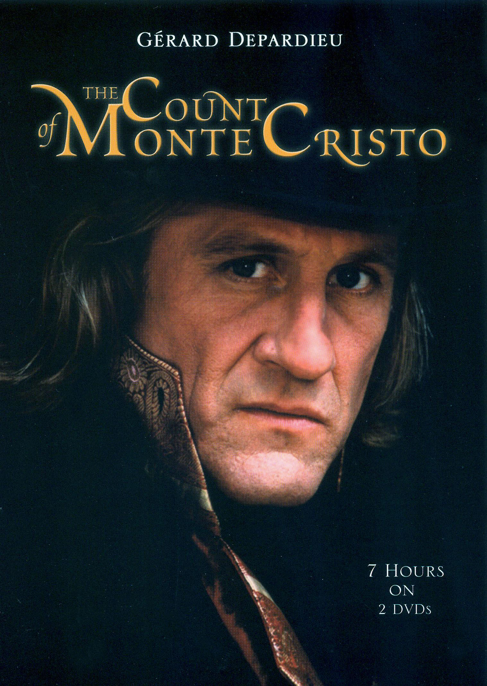

გრაფი მონტე კრისტო
ინფორმაცია წიგნზე
ავტორი: ალექსანდრე დიუმა
ჟანრი: ისტორიული, კლასიკა
გამოშვების თარიღი: 1844 წელი
აღწერა:
მოქმედება ვითარდება ახალგაზრდა ედმონ დანტესის გარშემო, რომელიც არის გემის კაპიტნის თანაშემწე და უახლოეს მომავალში უნდა გახდეს გემის კაპიტანი. თუმცა ის ადამიანები, რომელთანაც დანტესი მეგობრობს უდანაშაულოდ დასდებენ ბრალს საფრანგეთის სამეფოს ღალატში. ედმონს საკუთარ ნიშნობაზე აკავებენ და სამუდამოდ გზავნიან ციხესიმაგრე "იფში". ედმონი იქ 14 წელს გაატარებს და ამ დროის განმავლობაში შეშლილად გამოცხადებულ აბატ ფარიას გაიცნობს, რომელიც ბევრ რამეს ასწავლის ედმონს და ამასთან ერთად უანდერძებს უდიდეს ქონებას, რომელიც კუნძულ მონტე-კრისტოზე ინახება. 33 წლის ედმონ დანტესი ციხიდან გაქცევას ახერხებს…
ალექსანდრე დიუმა იყო ნაყოფიერი ფრანგი მწერალი დაბადებული 1802 წლის 24 ივლისს, რომელიც ცნობილია თავისი სათავგადასავლო რომანებით, ისტორიული მხატვრული ლიტერატურითა და პიესებით. მას, ალბათ, საუკეთესოდ აღიარებენ ისეთი ნაწარმოებებით, როგორიცაა "სამი მუშკეტერი" და "გრაფი მონტე კრისტო", რომლებიც დასავლური ლიტერატურის კლასიკად იქცა. დიუმა ცნობილი იყო თავისი ნათელი მოთხრობით, რთული პერსონაჟებითა და ისტორიული პერიოდების არსის გადმოცემის უნარით თავის ნარატივებში. მისმა ნამუშევრებმა შთააგონა მრავალი ადაპტაცია მედიის სხვადასხვა ფორმაში და დღესაც ფართოდ იკითხება და დაფასება ხდება.
ავტორის ხელმოწერა: